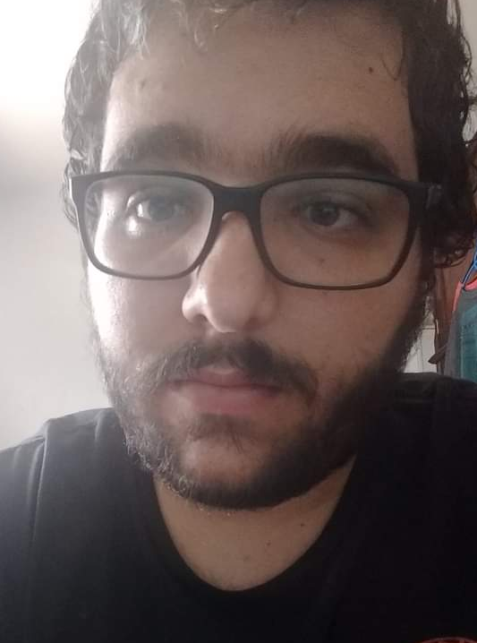
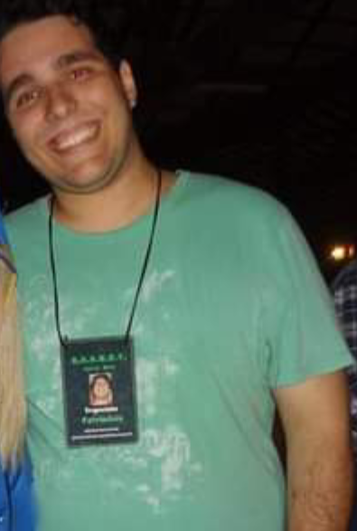

Sobre mim:
Nome: Matheus Costa Teixeira
Contato:
- E-Mail: mathcosta.ads@gmail.com
- Celular: (16) 99372-6051
Endereço:Rua Pedro Alvares Cabral, 1136 - Centro, Araraquara/SP - CEP 14801-390
Redes Sociais:
 |
Matheus Costa Teixeira |
 |
@matetz1 |
 |
Data de Nascimento:01/07/1992
Habilidades:
- Conhecimento básico em C;
- Conhecimento básico em HTML/CSS;
- Conhecimento básico em pacote Adobe (Photoshop, Illustrator);
- Domínio do pacote Office;
- Ingles fluente;
- Espanhol intermediário.
Pontos Fortes:
- Paciente;
- Lido bem com pessoas e grupos, me coloco sempre no lugar dos outros;
- Disposto a aprender coisas novas;
- Contato com diversas areas do conhecimento;
- Pro-ativo;
- Criativo;
- Pontual com prazos;
- Boa capacidade de comunicação.
Pontos Fracos:
- Quando focado em algo, tendo a esquecer um pouco da organização ao meu redor;
- Olho pouco meus meios de mensagem (celular) quando estou imerso em alguma atividade, as vezes demorando a responder;
- Em processo de aprendizado de outras linguagens e de tecnicas mais aprofundadas de desenvolvimento de sistemas - começo do curso;
Profissão dos Sonhos: Algum cargo relacionado a Marketing Digital e Análise de Dados, que me faça usar os conhecimentos adquiridos em duas graduações. Porém, não me limito apenas a esse setor.
